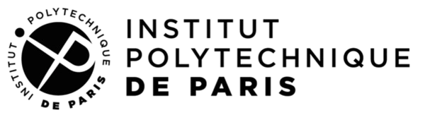

Master Thesis Presentation · The University of Tokyo · 23 April 2026
Learning Quantum Dynamics via
Fourier Coefficient Extraction
Based on A. Barthe, M. Yaghubi Rad, M. Grossi & V. Dunjko, arXiv:2506.17089 (2025)
Thomas Lagoutte‑Ferré
M2 Quantum, Mathématiques, Informatique (QMI) — Institut Polytechnique de Paris
International Center for Elementary Particle Physics (ICEPP), The University of Tokyo
Supervisor: Koji Terashi
